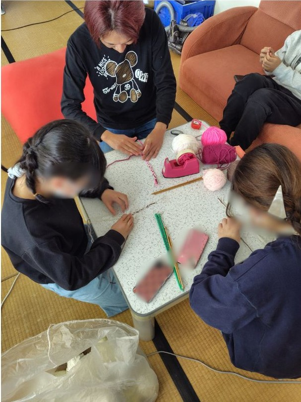
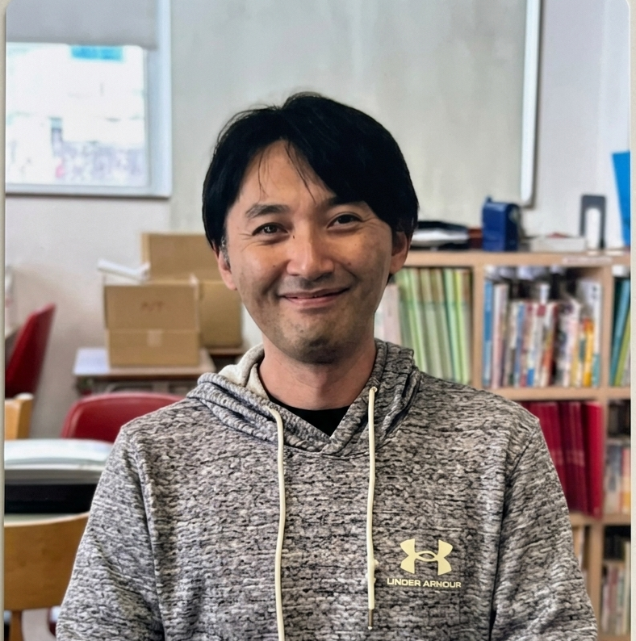
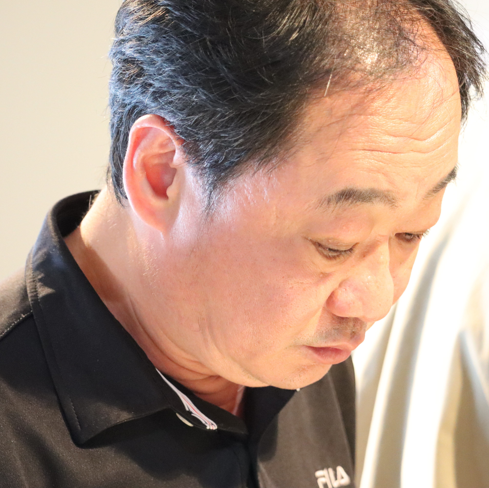
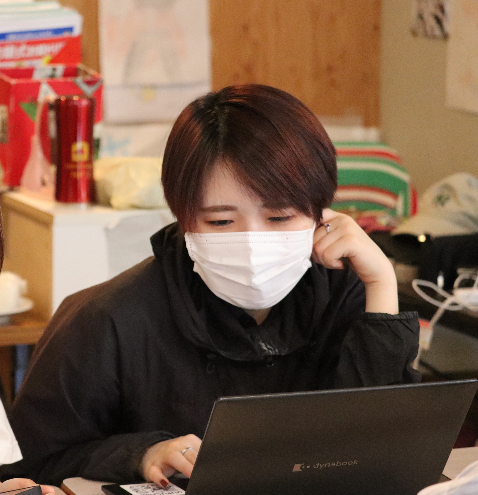
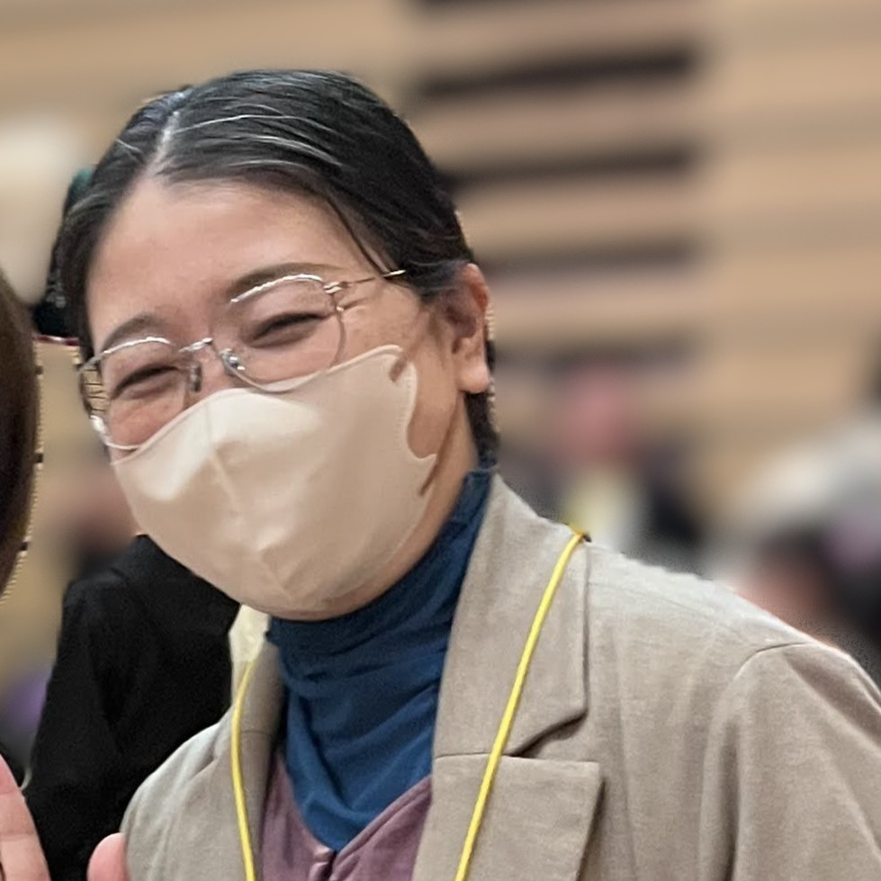
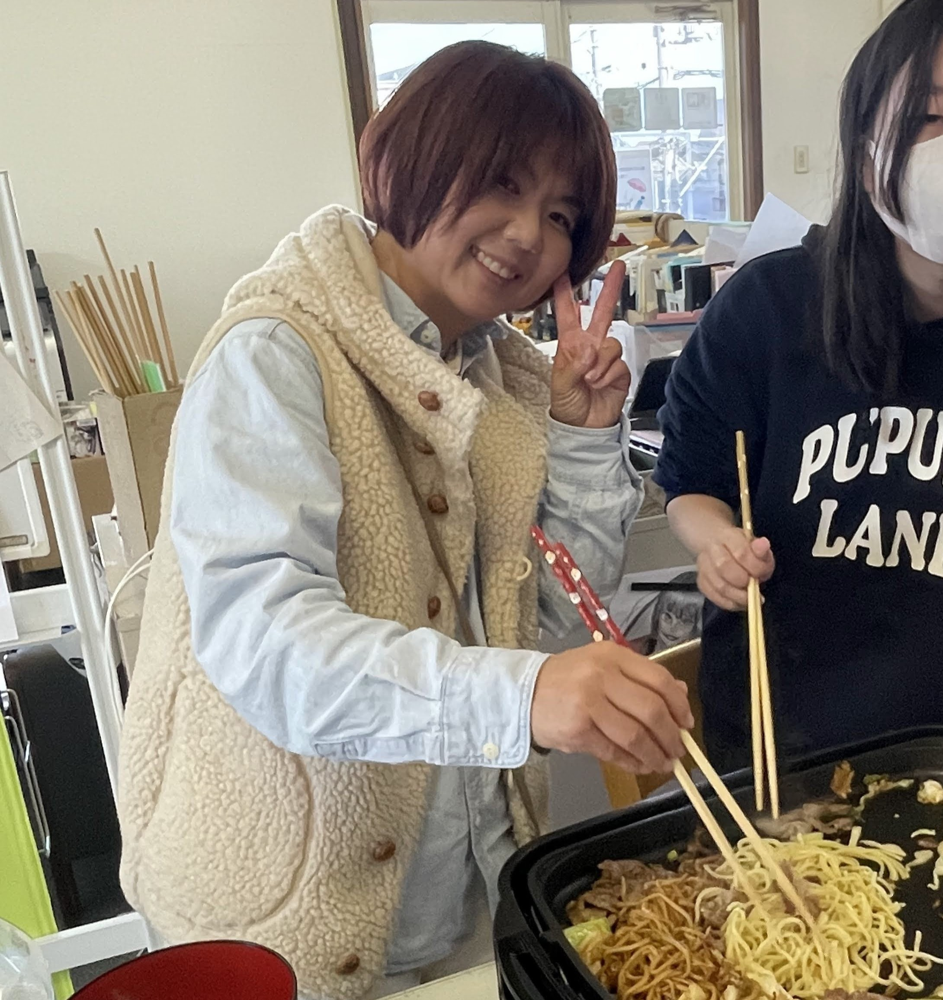

「放課後等デイサービス そら」って？
「そら」は、富田林市にあるフリースクール型の放課後等デイサービスです。
南河内や近隣地域で、発達障害のあるお子さん、不登校のお子さんに、安心してすごせる"もうひとつの居場所"をお届けしています。
学習支援はもちろん、日々の体験活動を通して子どもたちの成長を支援しています。

スタッフ

松尾 一友
教室長・保育士
好きな物：車、バイク、釣り
得意教科：数学
アニメも漫画も大好きです。皆の推し教えて下さいね

内田 晋
児童発達支援管理責任者
食べることが好きです。
好きな食べ物についておしゃべりしましょう！

迫田 秋音
副教室長・児童指導員
勉強を教えることを頑張ってます。
勉強だけじゃなく、いろんなことを楽しみたいです。

田重田 つばさ
保育士
描いたり作る事が好きです。皆の興味ある事も一緒に楽しめたら嬉しいです！

杉田 みはる
保育士
音楽と旅が好きです。
みんなの遊びも勉強も、全力で応援します！
布谷 和真
児童指導員
流行には乗るタイプです。
好きなものについて語り合いましょう。
こだわり
-
01習熟度に応じた学習支援
学年にこだわらず、お子様一人一人に合わせた学習支援を行います。
-
02人とつながる、社会とつながる
そらはコミュニケーションを大切にしています。日々の遊びや活動を通して、コミュニケーション力を培います。
-
03"体験"で学ぶ、ほんものの時間
月1回の調理実習・理科実験・お出かけイベントに加え、不定期に公園へ体を動かしに出ています。
-
04大規模なイベント
母体となる志塾フリースクールラシーナの3教室合同で、お泊り合宿や運動会を行います。さらに、志塾グループ全体で行う文化祭など、様々なイベントを経験することができます。
1日の流れ
普段の1日の様子です。みんな、自分のペースで来所し、自分のペースで帰宅します。
※体調や活動内容に合わせてゆるやかに調整します。
-
10:001日のスタート・勉強の時間
その日1日の学習予定を立て、勉強を開始します。休憩も挟みながら、集中して取り組みます。受験生はとくに、進路のことも考え、長期的なプランをスタッフと一緒に考えます。
-
12:00お昼ごはん
お弁当を食べます。近所にスーパーやお弁当屋さんがあるので、スタッフと一緒に買いに行くこともできます。
-
13:00体験活動（自由時間）
友達と一緒にゲームをしたり、トランプをしたり…思い思いに好きな時間を過ごします。
-
14:00天気が良ければ公園へ！
公園へ行ったり、みんなで遊んですごしたりしています。お友達と一緒に何かをする時間です。月に1回は調理実習をします！
-
16:45おそうじの時間
みんなで掃除の時間です。場所はくじ引きで決定します。教室を隅々まできれいにします。
-
17:00午後の勉強の時間
午後にも学習の時間を設定しています。学校の宿題のサポートなどをしています。この後の時間に行っている学習塾『志塾＠』でも、学習支援をしています。
-
18:00帰宅
放課後等デイサービス そらは、この時間で終わりです。水〜金曜日には、18:30〜学習塾『志塾＠』があります。
行事・イベント
四季にあわせた行事と、毎月のおたのしみイベントがあります。
登山・お花見
桜の季節には明治池公園でお花見をします。桜が満開で綺麗でした✨ 登山は、ラシーナ3教室合同イベントです。みんなで楽しく頂上を目指します！
夏まつり
ラシーナの拠点『泉北BASE』で行われる夏祭りに参加できます。地域の方も参加できるお祭りで、屋台を出店します。たくさんの方と関わることができ、良い経験になりますね。
運動会・文化祭・合宿
行事が盛りだくさん！ラシーナ3教室の合同イベントです。中でも文化祭は、志塾グループの合同イベントで、全国からたくさんの教室が参加します。
新春祭り・卒業式
新春祭りでは、普段からお世話になっているお家の方に教室へ来てもらい、子どもたちがおもてなしをします。卒業式の準備では、イヤーブックや出し物、制作物を作ります。
毎月のおたのしみイベント
毎月 お出かけ・調理実習・理科実験を行っています。他にも、外部講師の方に来ていただき特別授業を行ったり、近所の総合体育館へ行きバスケットボール等のスポーツをします。
- 🚃 お出かけ
- 🍳 調理実習
- 🧪 理科実験
- 📒 特別授業
- 🏀 スポーツ
お知らせ
そらの最新のお知らせ・ブログをお届けします。
読み込み中…
よくあるご質問
利用を検討されている保護者様から、よくいただくご質問です。
対象年齢・学年はどこまでですか？
小学校1年生から高校3年生までご利用いただけます。
何時から開いていますか？
10:00〜18:00まで開いています。土日祝はお休みです。
フリースクール型って何ですか？
フリースクールの活動をすることで、5領域の支援をしています。
学校に行っていない（不登校）でも利用できますか？
はい、利用できます。（受給者証が必要となります。）
出席認定とは？
保護者様または、本人が望まれる場合、所属学校へそらに来た日数を学校出席日数として認めてもらえないかお願いをしています。
発達障害の診断がなくても利用できますか？
お住いの市町村が発行する受給者証があれば、ご利用いただけます。
受給者証の取得方法がわかりません
一般的な流れは以下のとおりです。
- 障がい福祉担当窓口に相談
- 児童相談支援センターに相談
- 医師の診断書・意見書の用意（診断書が無くても市町村が認めれば受給者証が発行される場合もあります）
- 市への支給申請
- 受給者証の交付
- そらと契約
取得のサポートもおこなっていますので、お気軽にご相談ください。
費用（利用料金）はいくらですか？
世帯年収によって変動します。ぜひご相談ください。
送迎はありますか？
送迎は行っておりません。
見学・体験はできますか？
随時受け付けております。下記お問い合わせよりご連絡ください。
どこから通えますか？
地域に制限はありませんので、通えることができれば大丈夫です。富田林・河内長野・大阪狭山・羽曳野・松原・太子町などからご利用いただけます。
アクセス
- 施設名
- 放課後等デイサービス そら
- 住所
- 〒584-0036
大阪府富田林市甲田2丁目20-14 - 電話
- 0721-51-4768
- FAX
- 0721-81-0417
- 開所日
- 月〜金（祝日・年末年始をのぞく）
- 対象
- 小学1年生〜高校3年生
- 電車
- 近鉄「川西」駅から徒歩3分
事業所情報
基本情報
- 事業所名
- 放課後等デイサービス そら
- 住所
- 大阪府富田林市甲田二丁目20番14号 2階
- 電話番号
- 0721-51-4768
- 運営主体
- 特定非営利活動法人 志塾フリースクールラシーナ
- 最寄り駅
- 川西駅
- 障害種別
- 発達障害・知的障害
- 受け入れ年齢
- 小学生・中学生・高校生
- 専門スタッフ
- 保育士・精神保健福祉士・児童指導員
- 支援プログラム
- 学習支援・体験活動支援
月1回程度、土日のイベント(遠足など)あり - 送迎サポート
- なし
- 費用について
- 遠足イベント時の施設入場料など実費請求がある場合があります。
サービス自己評価
2025年度
2024年度
お問い合わせ
見学・体験・ご相談など、お気軽にどうぞ。お電話・メール・フォームのいずれでもOKです。